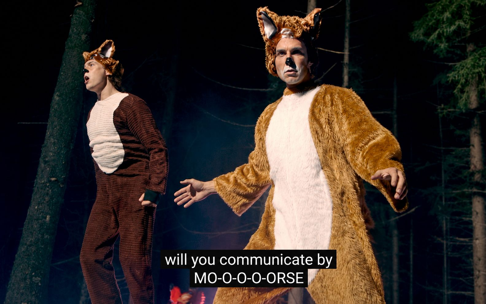

Twelve listens into "What Does the Fox Say?" and I still don't know what the fox says.
But my 9-year-old now knows what Morse code is. He caught a lyric I had missed: "Will you communicate by Morse?"
"Dad, what's Morse?"
I knew the basic answer. But instead of giving him the quick version, I told him to ask ChatGPT. It felt like one of those small moments where a simple question could turn into something deeper.
For the next 25 minutes, he kept going:
- Morse code
- Telegraphs
- Undersea cables
- The moon
- Satellites
- Asteroid mining
- Who owns moon dust if two countries disagree?
No nagging. Just question after question. Then my wife walked in and asked what he learned.
He started explaining it back to her. Not perfectly, and not as some polished story. But he was retrieving the information, connecting the dots, and trying to explain it in his own words.
That's the learning moment I keep thinking about.
Taking scattered information and turning it into something another person can understand is a real skill. Maybe one of the most important ones.
I keep hearing AI in education framed as cheating, replacing teachers, or personalization. What I watched was different.
The bot answered the questions. The retelling did the teaching.
We talk about AI scaling output. This was AI scaling curiosity.
I still don't know what the fox says. I'll take it.